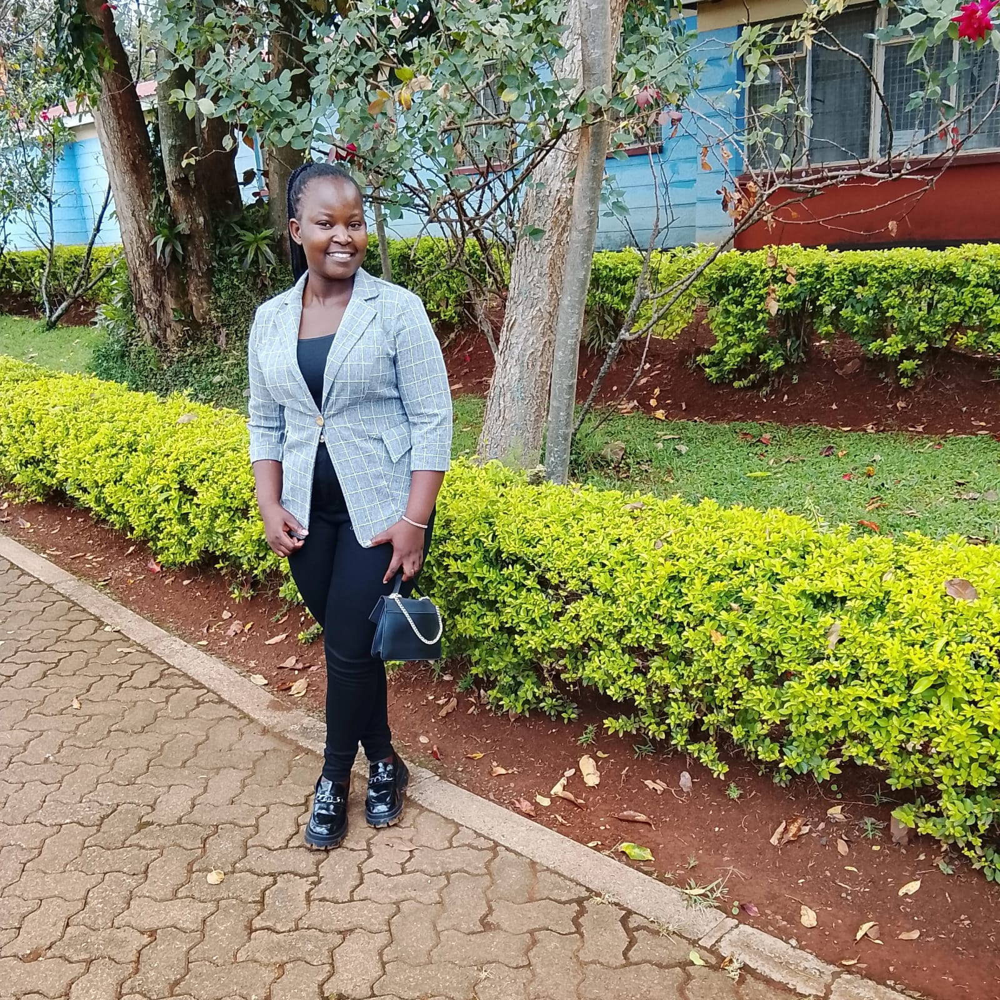

Software Engineering Student at Kisii University
My name is Mary Aluoch. I am 20 years old. I come from Siaya county in Kenya. I am currently a 2nd year student at Kisii University doing Bachelor of Science in Software Engineering.
I went to Rangala Girls High School from 2020 to 2023 and i got a B+ in my KCSE exam. After finishing high school i joined ALX Africa where i did backend development for one year online. i got two certificates, one for Professional Foundations and one for Backend Development.
After i finish my degree i want to work as a software engineer. I also want to start my own company one day that uses technology to help people especially in Africa.